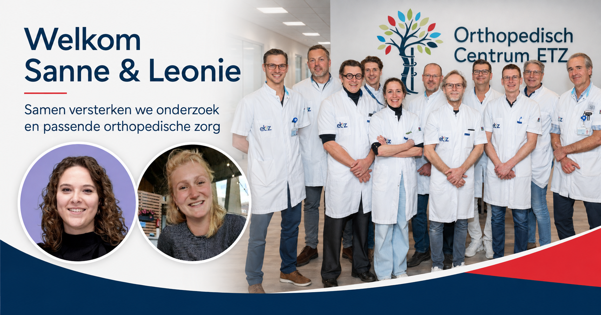

6 september 2026
Leonie Meihuizen gestart als onderzoeker voor het Transmuraal Tilburg Cohort
Sinds 1 september werkt fysiotherapeut Leonie Meihuizen één dag per week als onderzoeker binnen het Transmuraal Tilburg Cohort. Daarmee krijgt de opbouw van het digitale zorgpad en de prospectieve gegevensverzameling extra versterking.
Versterking van het team
Leonie werkt samen met Hannelore Hoogakker, mij en de andere betrokkenen aan de verdere opbouw van het zorgpad. Haar achtergrond als fysiotherapeut sluit goed aan bij de vragen die in het cohortonderzoek samenkomen: hoe bewegen, leefstijl, belastbaarheid en orthopedische klachten zich in de dagelijkse praktijk tot elkaar verhouden.
Haar komst voegt praktische onderzoekscapaciteit toe op een belangrijk moment. Het team werkt aan het digitale zorgpad en bereidt de prospectieve gegevensverzameling voor. Daarmee kunnen patiënten die toestemming geven volgens een vaste onderzoeksroute worden gevolgd.
Van digitaal zorgpad naar cohortonderzoek
Het Transmuraal Tilburg Cohort wordt opgebouwd rond een digitaal zorgpad voor patiënten met artrose en obesitas. In dat zorgpad komen informatie, vragenlijsten, begeleiding en de verbinding tussen ziekenhuis en regio samen.
Het cohortonderzoek moet stap voor stap inzicht geven in het gebruik van die route en in veranderingen die in de praktijk worden gezien. Daarbij kijken we onder meer naar pijn, functioneren, kwaliteit van leven, bewegen en zorggebruik.
Onderzoek dichter bij de dagelijkse praktijk
De onderzoeksvragen komen rechtstreeks voort uit de orthopedische praktijk. Mensen met artrose en obesitas hebben vaak te maken met meerdere vormen van zorg en ondersteuning. Met een vaste digitale en transmurale route willen we onderzoeken waar informatie, begeleiding en samenwerking beter op elkaar kunnen aansluiten.
Leonies start valt samen met de oprichting van het Onderzoeksbureau Orthopedie ETZ. Sanne van Dijk is gestart als hoofdonderzoeker en ondersteunt de vakgroep bij het verder organiseren van bestaand en nieuw onderzoek. Binnen die bredere onderzoeksstructuur richt Leonie zich specifiek op het Transmuraal Tilburg Cohort.